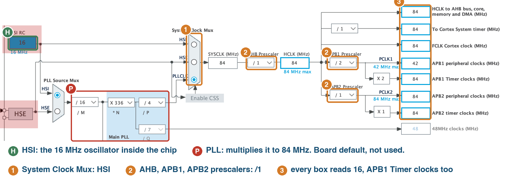
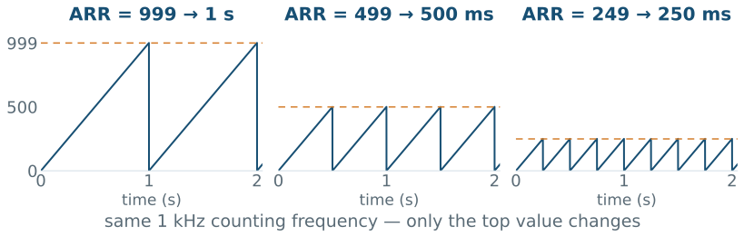

L07 - Timers
The L04 blink with L06’s button flag inside it. The flag is read only once per pass:
while (1) {
HAL_GPIO_TogglePin(GPIOA, GPIO_PIN_5);
HAL_Delay(500); // CPU trapped here
if (button_event) { button_event = 0; react(); } // L06 flag
}Today: a timer counts the time and the CPU stays free. You will set PSC and ARR, use the update event by polling and by interrupt, and build a 1 ms tick.
A counter in hardware: it counts clock pulses and raises an event at the value you chose.
A small oscillator inside the chip makes 16 million pulses per second. In our timer projects nothing divides them on the way to the timer.
One CubeMX step makes this true (Lab 6, CubeMX step 1): Clock Configuration tab → System Clock Mux = HSI, AHB / APB1 / APB2 prescalers = /1. Every box on the right then reads 16. The board default uses the PLL (84 MHz) instead. Full tree: RM0368 Rev 6, §6.2 — p. 94.

HSI 16 MHz: inside the chip, our choice · HSE 8 MHz: the board crystal, accurate · PLL up to 84 MHz: speed, the board default
The prescaler divides the timer clock frequency by PSC + 1. The result is the counter frequency: how many times per second CNT moves.
counter frequency = timer clock frequency ÷ (PSC + 1)
On this board: counter frequency = 16 MHz ÷ (PSC + 1). PSC is 16-bit, 0…65535; the lab uses PSC = 15.
PSC |
PSC + 1 | counter frequency | one tick |
|---|---|---|---|
15 |
16 | 1 MHz | 1 µs |
1599 |
1600 | 10 kHz | 100 µs |
15999 |
16000 | 1 kHz | 1 ms |
CNT increments once per prescaled tick, in hardware, in parallel with your program.
▸ advance to run the counter for 3.3 s
UIF is a pending bit in TIM2->SR, the same idea as the EXTI pending bit in L06.
In-lecture demo: interactive counter animation.
ARR holds the top value, so the counter visits ARR + 1 states, 0 through ARR, before the update event.
update period = (ARR + 1) ÷ counter frequency
update frequency = counter frequency ÷ (ARR + 1)

For one update per second from 16 MHz, split the division in two:
16 000 000 Hz ÷ (15999 + 1) = 1000 Hz counter frequency
1000 Hz ÷ (999 + 1) = 1 Hz → 1 s update frequency, period01 Both divisions use the register value plus one. PSC = 0 divides by 1; ARR = 999 means 1000 states.
02 Split so that both values fit in 16 bits. 1 kHz in the middle gives millisecond resolution for free.
03 A forgotten +1 makes every period slightly wrong. It is the classic timer bug.
Required: one update event every 200 ms from the 16 MHz timer clock.
1 Keeping the 1 kHz counter frequency, what is PSC?
2 What is ARR?
3 Give a second PSC/ARR pair that produces the same period.
PSC = 15999, ARR = 199. Alternatives abound: PSC = 1599 (10 kHz) with ARR = 1999 also gives 200 ms.
Registers you write once (PSC, ARR), one that never stops (CNT), and one bit the hardware sets for you (UIF).
The real thing: RM0368 Rev 6, Fig. 87 General-purpose timer block diagram — p. 317. Find every block from this slide in it.
TIM_HandleTypeDef htim2;
htim2.Instance = TIM2;
htim2.Init.Prescaler = 15999; // 16 MHz -> 1 kHz
htim2.Init.CounterMode = TIM_COUNTERMODE_UP;
htim2.Init.Period = 999; // 1 kHz -> 1 s
HAL_TIM_Base_Init(&htim2);01 The handle structure collects the timer’s settings, the GPIO_InitTypeDef pattern again.
02 Period is the HAL’s name for the ARR value.
03 In a CubeMX project this code is generated as MX_TIM2_Init().
Deep dive: UM1725 Rev 8, TIM base functions — p. 1065.
New PSC and ARR values do not necessarily act immediately:
01 PSC is always buffered: the new value is copied into use at the next update event, up to one full period later.
02 ARR is buffered only when auto-reload preload (ARPE) is enabled. The HAL default writes it immediately.
03 Writing the UG bit in TIM2->EGR forces an update event now: the buffered prescaler loads and CNT resets. This is why the lab’s bare-metal init writes TIM2->EGR.
Changing a running timer’s speed? First ask when the new values take effect.
UIF. 3 clear it. 4 do the work.
AskEvery pass reads UIF with __HAL_TIM_GET_FLAG(). Most passes see 0 and move on. The loop never waits.
ActWhen UIF is 1: clear it first with __HAL_TIM_CLEAR_FLAG(), then toggle LD2. An uncleared UIF reads as a new event on the very next pass.
CostPolling keeps the loop free but spends one read on every pass, and a slow pass sees the event late. The interrupt path on the next slide removes the asking.
HAL_TIM_Base_Start(&htim2);1while (1) { /* other work runs freely here */ if (__HAL_TIM_GET_FLAG(&htim2, TIM_FLAG_UPDATE)) {2 __HAL_TIM_CLEAR_FLAG(&htim2, TIM_FLAG_UPDATE);3 HAL_GPIO_TogglePin(GPIOA, GPIO_PIN_5);4 }}__HAL_TIM_GET_FLAG(&htim2, TIM_FLAG_UPDATE) is a macro: it reads TIM2->SR and tests one bit. TIM_FLAG_UPDATE is the HAL’s name for that bit, UIF (bit 0). __HAL_TIM_CLEAR_FLAG writes 0 to the same bit. Bare metal, the same bit: TIM2->SR & TIM_SR_UIF.
Polling still spends loop time asking. The update event can instead take the exact path B1’s press took in L06:
Hardware raises the request; HAL clears UIF and calls your callback. The main loop no longer asks at all.
main() arm the timer once. 1 highest priority. 2 unmask TIM2_IRQn in the NVIC. 3 start the counter and set UIE in TIM2->DIER.
HardwareTIM2 counts up to ARR, overflows and sets UIF. The NVIC accepts the request. No code of yours runs here.
GeneratedThe NVIC jumps to TIM2_IRQHandler(), which calls HAL_TIM_IRQHandler(). CubeMX wrote both in stm32f4xx_it.c. They clear UIF and pick your callback. Do not write your own.
Your codeThe HAL calls HAL_TIM_PeriodElapsedCallback() on every period. 4 one callback serves all timers, so check the instance. 5 do the work and return.
Whole pathOne setup block, one hardware event, two generated handlers, one callback you write. The colours in the path match the colours in the code.
HAL_NVIC_SetPriority(TIM2_IRQn, 0, 0);1
HAL_NVIC_EnableIRQ(TIM2_IRQn);2
HAL_TIM_Base_Start_IT(&htim2);3void HAL_TIM_PeriodElapsedCallback(
TIM_HandleTypeDef *htim)
{
if (htim->Instance == TIM2) {4
HAL_GPIO_TogglePin(GPIOA, GPIO_PIN_5);5
}
}L06’s rules apply unchanged:
01 Check which instance caused the interrupt.
02 Record that the event happened: set a flag, count a tick.
03 Return quickly. No HAL_Delay(), no printing, no application logic.
A 1 ms timer callback that takes 2 ms to run is a program that falls behind forever.
main(). 1 one shared counter. 2 the callback checks the instance 3 and adds one.
HardwarePSC = 15, ARR = 999: 16 MHz → 1 MHz → 1 kHz. One update event per millisecond. The generated handler and the HAL clear UIF and call the callback.
Your callbackThe callback does one thing: ms++. It reports that a millisecond passed and returns. No waiting, no application logic.
Main loopmain() reads ms whenever it likes. The ISR writes it and main() reads it, so it is volatile, for the same reason as L06's button_event.
PatternThe L06 pattern again: the callback reports, main() consumes. From here on, every delay in the program becomes a subtraction on ms.
volatile uint32_t ms = 0;1void HAL_TIM_PeriodElapsedCallback( TIM_HandleTypeDef *htim){ if (htim->Instance == TIM2) {2 ms++;3 }}ms − t_led ≥ 500: half a second has passed since the last toggle. Record the time first, t_led = ms, then toggle LD2.
100 ms taskms − t_sample ≥ 100: the same shape with a different interval. A third interval is one more subtraction. The timer setup does not change.
Other workNothing in this loop waits. Other work runs on every pass, and each task runs only when its time has come.
Wrap-aroundUnsigned subtraction keeps every schedule correct when ms wraps around after 49.7 days, the same arithmetic as L06's debounce.
uint32_t t_led = 0, t_sample = 0;while (1) { if ((ms - t_led) >= 500U) { // 500 ms1 t_led = ms; HAL_GPIO_TogglePin(GPIOA, GPIO_PIN_5); } if ((ms - t_sample) >= 100U) { // 100 ms2 t_sample = ms; /* read a sensor */ } /* other work continues */3}HAL_DelayA timer inside the core has ticked every millisecond since L01. HAL_Delay only waits on it.
Deep dive: PM0214 Rev 10, §4.5 SysTick timer — p. 246.
Leave ARR at its 32-bit maximum and the counter itself becomes a clock:
/* PSC = 15 -> 1 MHz: CNT increments once per microsecond */
uint32_t start = TIM2->CNT;
do_work();
uint32_t elapsed_us = TIM2->CNT - start; // wrap-safe01 No interrupts at all. Read the counter twice and subtract.
02 TIM2 and TIM5 are the F401’s 32-bit timers: at 1 MHz they wrap after about 71 minutes.
03 This is how you measure code instead of guessing.
| Family | F401 instances | Adds |
|---|---|---|
| General-purpose, 32-bit | TIM2, TIM5 |
long counts, all GP features |
| General-purpose, 16-bit | TIM3, TIM4, TIM9–TIM11 |
capture, compare, PWM |
| Advanced-control | TIM1 |
complementary outputs, motor control |
Every family shares today’s time base: clock → PSC → CNT → ARR → update. PWM and input capture (L08) are additions to it, not replacements.
Deep dive: RM0368 Rev 6, §13 TIM2 to TIM5 — p. 316; register map §13.4 — p. 353.
STM32 HAL
01 SFR PROOF: pause after Init: TIM2->PSC and TIM2->ARR hold your two numbers, CNT is 0. Pause twice after Start: TIM2->CNT differs each time.
02 UIF: TIM2->SR bit 0 sets at each rollover; your code or HAL clears it. A successful build proves none of this.
Same registers, different interface. The clock-enable-first rule from L04 holds: TIM2 is on APB1, not AHB1.
01 WRONG CLOCK ASSUMED: an online example’s 84 MHz math on our 16 MHz configuration, periods 5× too long.
02 MISSING +1: PSC = 16000 or ARR = 1000 where 15999/999 was meant.
03 CLOCK NOT ENABLED: TIM2 needs its APB1ENR bit. AHB1 was the GPIO bus.
04 NVIC FORGOTTEN: the update event fires, UIF sets, and nothing runs.
05 FLAG NOT CLEARED: polling code without CLEAR_FLAG sees an eternal event.
06 SLOW CALLBACK: work that belongs in main() running at interrupt priority.
Lab: build the 1 ms tick from a TIM2 update interrupt, drive a 100/900 ms heartbeat on LD2 with no HAL_Delay(), then a bare-metal microsecond timer. SFR proof required.
✓ Trace the pipeline: clock → PSC → CNT → ARR → update event.
✓ Calculate PSC and ARR for a required period, with the +1 rule.
✓ Consume an update event by polling and by interrupt.
✓ Build and use a 1 ms tick with wrap-safe scheduling.
✓ Verify timer behaviour in the register view.
Next: PWM, the same counter with an output pin attached to a compare value.
01 FREQUENCY: What is the counter frequency from the 16 MHz timer clock?
02 PERIOD: How often does the update event fire?
03 PATH: Name the register bit that records the event and the function that HAL finally calls.
04 POLLING: Which two operations must a polling loop perform on UIF?
05 EVIDENCE: Which SFR observation proves the counter is running?
Every concept in this lecture, with page-linked sources: academic references.
EE5203 - L07